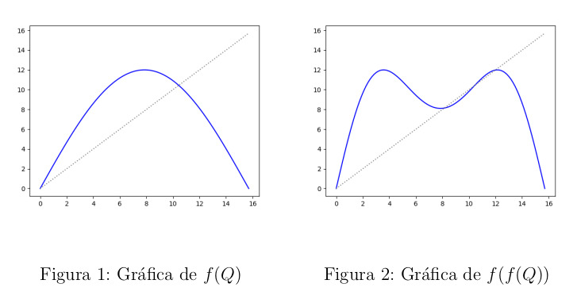
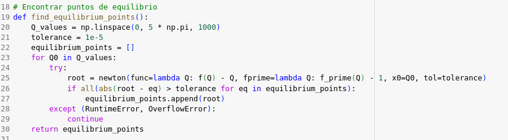
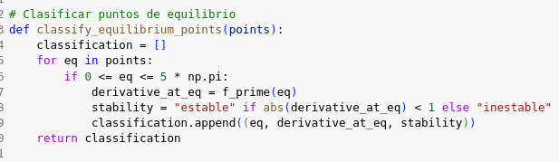
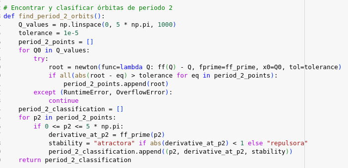
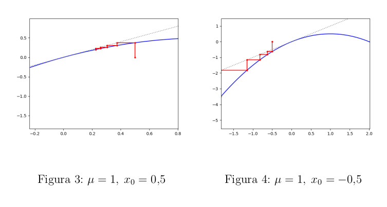
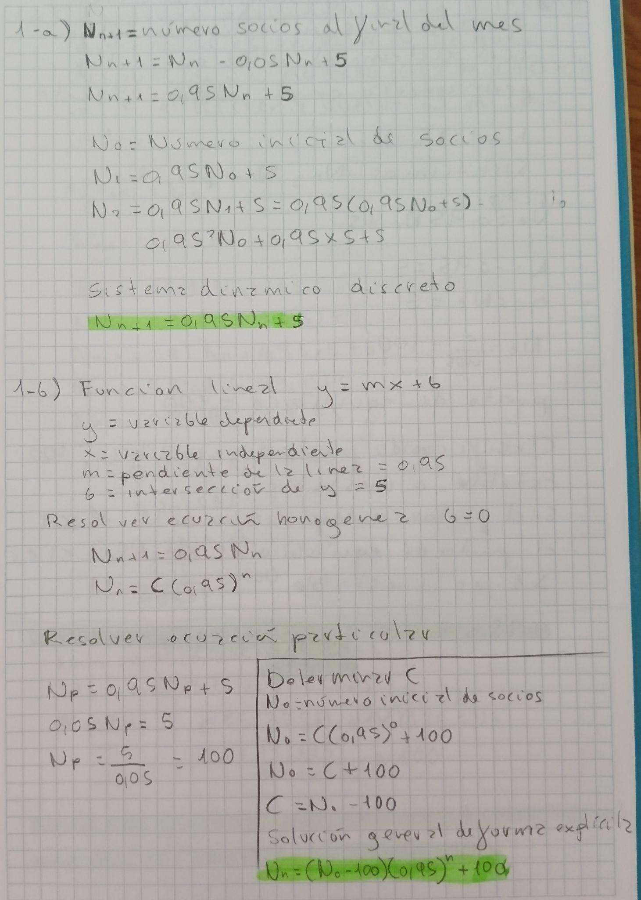
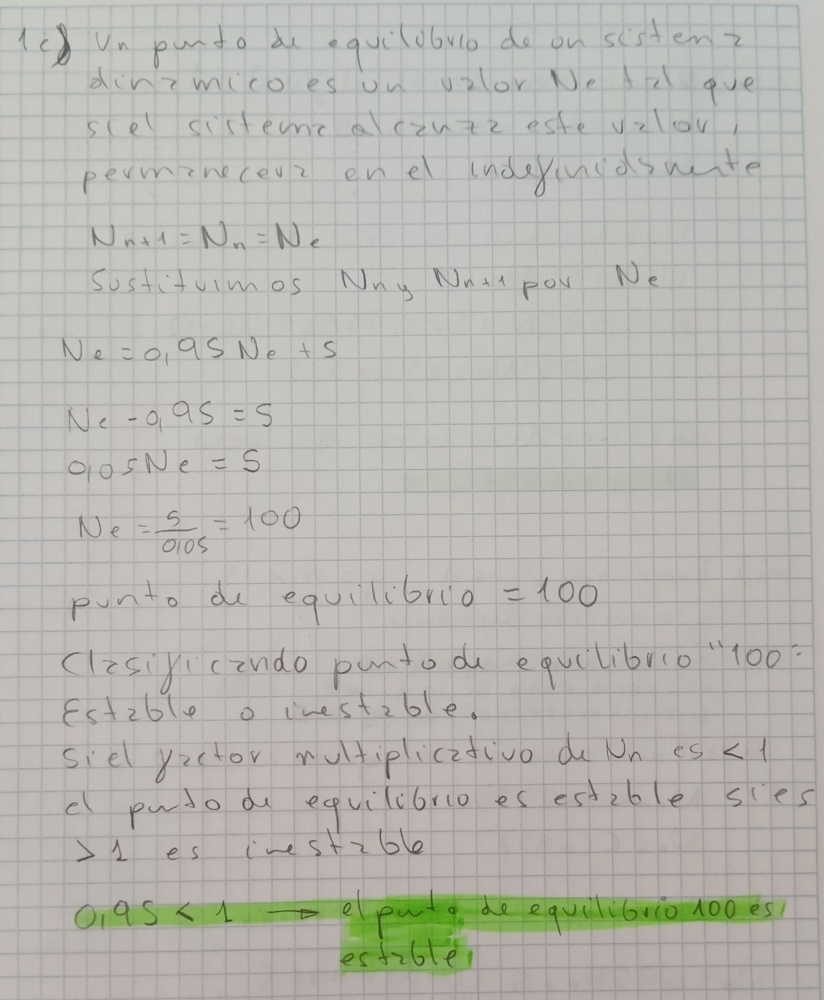
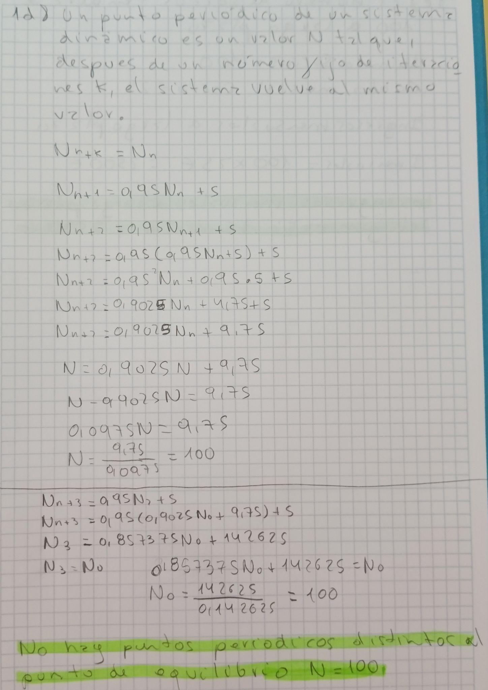
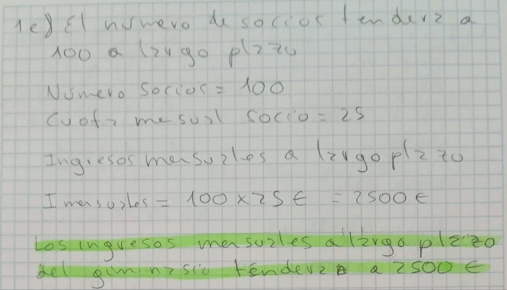

1. Actividad 1 — Sistemas dinámicos discretos
Ejercicio 1 — Gimnasio Poincaré
Sistema dinámico discreto de socios: Nn+1 = 0,95 Nn + 5 (5% de bajas, 5 altas mensuales).
Solución general explícita: Nn = (N₀ − 100)(0,95)ⁿ + 100.
Punto de equilibrio: Ne = 100. Como 0,95 < 1, el equilibrio es estable.
Puntos periódicos: No hay puntos periódicos distintos del punto de equilibrio (N=100).
Ingresos a largo plazo: 100 socios × 25 € = 2.500 €/mes.
Ejercicio 2 — Producción fabril
Función: f(Q) = D · sin(Q / C) con D=12, C=5.
Puntos de equilibrio en [0, 5π]: Q ≈ 0,0 (inestable) y Q ≈ 10,43564 (inestable).
Órbitas de periodo 2: (0,0) repulsora, (15,70796, 15,70796) repulsora. A largo plazo la producción se estabiliza según el valor inicial Q₀, tendiendo a un equilibrio u oscilando entre dos valores.
Código Python (ejercicio 2)
import numpy as np
import matplotlib.pyplot as plt
from scipy.optimize import newton
def f(Q):
return 12 * np.sin(Q / 5)
def f_prime(Q):
return 12 / 5 * np.cos(Q / 5)
def ff(Q):
return f(f(Q))
def ff_prime(Q):
return f_prime(f(Q)) * f_prime(Q)
def find_equilibrium_points():
Q_values = np.linspace(0, 5 * np.pi, 1000)
tolerance = 1e-5
equilibrium_points = []
for Q0 in Q_values:
try:
root = newton(func=lambda Q: f(Q) - Q,
fprime=lambda Q: f_prime(Q) - 1, x0=Q0, tol=tolerance)
if all(abs(root - eq) > tolerance for eq in equilibrium_points):
equilibrium_points.append(root)
except (RuntimeError, OverflowError):
continue
return equilibrium_pointsEjercicio 3 — Equilibrios paramétricos
Estudio de equilibrios del sistema en función del parámetro real µ. Cuando no aplica el criterio analítico, se usa cobweb-plot para analizar la dinámica.









↑ Volver al índice